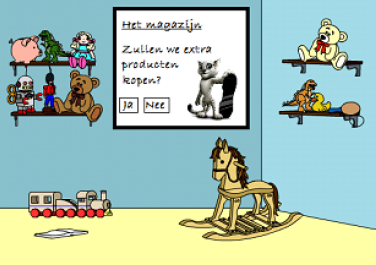

Onbegeleid groepswerk
Op deze pagina zijn de drie ontwerpen voor het idee omtrent het gekozen onderwerp. Ik heb gekozen voor de opdracht "bedenk een idee hoe je kinderen enthousiast kan krijgen voor het vak economie". Het lijkt me erg leuk om een idee te bedenken om dit onderwerp over te brengen op kinderen, daarom heb ik gekozen voor dit onderwerp.
Technisch ontwerp
-Kosten van de tablets wanneer de school geen tablets heeft.
-Het ontwikkelen van een app.
-Hoeveel kinderen er in de klas zitten, hoe groot de groepen zijn en moeten zijn.
-De verdeling onder de kinderen qua slimheid.
-Het opnemen van de app in de lesweek.
De benodigdheden voor ons spel zijn heel minimaal. Aangezien er op veel basisscholen al tablets aanwezig zijn kunnen deze scholen onze app downloaden en gebruiken en dit aantal zal in de toekomst nog toenemen (http://nos.nl/video/469704steedsmeerbasisscholengebruikentablets.html). Door onze klassikale visie op het spel zijn er geen individuele tablets nodig maar ongeveer 5 a 6 tablets per klas. Een school kan ervoor kiezen de tablets door te schuiven door de klassen. Dit omdat wij denken dat het nodig is het spel klassikaal les te geven ongeveer 1 keer per week a 2 uur. Doordat de kinderen in groepjes moeten samenwerken kunnen ze hiervoor 1tablet gebruiken.
De kosten voor een school die geen tablets hebben kunnen goedkope tablets aanschaffen. De kosten zijn echter heel laag aangezien de tablets voor onze app gedeeld kunnen worden tussen de verschillende klassen. Niet alleen voor onze app maar leraren kunnen ook bijvoorbeeld gebruik maken van de tablet of voor andere doeleinden. Aan onze app zitten kosten verbonden. We zijn van mening een vaste prijs te vragen vooreen apppakket. Dit houdt in dat een school onze app aanschaft en dan de mogelijkheid heeft de app op X aantal tablets te installeren door middel van een speciale code die een school ontvangt na de aanschaffing.
De klas zou in groepen van 4 verdeeld kunnen worden. Aangezien er een gemiddelde van 23 leerlingen per klas is. We hebben 4 taken in het spel en op het begin is het de bedoeling klassikaal op te letten en daarna samen te werken. Het is naar het inzicht van de leraar de groepen van de kinderen slim in te delen als je kijkt naar inzicht, slimheid van de kinderen als individu. Ook moet er door de leraar goed gedoseerd worden. Bij langdurige gebruik en eenzijdige inzet van een app blijkt namelijk dat de leerwinst na verloop van tijd verloren gaat. Daarom bevelen we aan om 2 uur de app in te zetten per week
Interactieontwerp
De Speelgoedwinkel is een educatief programma dat basisschoolkinderen van 8 tot 12 leert om te gaan met geld. Het is een klassikaal programma, waarbij de kinderen in kleine groepjes (4 tot7 leerlingen) onder begeleiding van de leerkracht aan het werk gaan.
De Speelgoedwinkel representeert het kleine winkeltje van Diego waar een aantal speelgoedproducten worden verkocht. Diego dient als mascotte en geeft uitleg over simpele principes die komen kijken bij de in en verkoop van producten. Ook begeleidt hij de kinderen bij de taken die horen bij het onderhouden van een winkel.
Het programma begint met een klassikaal moment, waarbij De Speelgoedwinkel getoond wordt op een beamer. Wanneer het programma wordt geopend volgt er een introductie van Diego. Hij vertelt hier welke producten er deze week zijn verkocht. Vervolgens gaan de leerlingen klassikaal uitrekenen hoe veel geld er is verdiend met de verkoop van deze producten. Samen komen ze tot een omzet van de desbetreffende week.
Hierna volgt het groepswerk. De klas heeft vaste groepjes en elk groepje krijgt een bepaalde taak. Elke week switchen de groepjes van taak, zodat ze alle verschillende taken leren kennen.Elk groepje heeft een tablet tot zijn beschikking. Hierop is De Speelgoedwinkel te openen en kunnen de kinderen de huidige producten, het budget en de omzet van de week zien. Ook kunnen zij hier Diego raadplegen.
In De Speelgoedwinkel zijn er vier taken van belang. De taken hangen samen met de principes die uitgelegd worden door Diego.
Na de groepsbesprekingen volgt er een klassikale bespreking. Hier legt elk groepje uit welke beslissingen zij hebben gemaakt. De beslissingen worden besproken en klassikaal wordt er besloten wat er deze week gedaan wordt in De Speelgoedwinkel. Gezamenlijk worden de besluiten uitgevoerd op de beamer.
Het proces van lenen en sparen wordt aantrekkelijk gepresenteerd, zodat het eenvoudiger wordt voor kinderen om hier mee om te gaan. De bank kent namelijk ook een mascotte: bankdirecteur Menneer Klein. Menneer Klein helpt de kinderen en geeft uitleg over wat ze kunnen doen bij zijn bank. Door van de bankdirecteur een zichtbaar figuur te maken wordt het proces van lenen en sparen makkelijker te begrijpen.
Als laatste wordt er nog een wedstrijdelement toegevoegd aan De Speelgoedwinkel. Zo kunnen de basisschoolklassen een competitie aangaan met de parallelklassen. Dit maakt het spel uitdagender en zorgt ervoor dat de kinderen beter zullen nadenken over wat ze het beste kunnen doen met het geld dat ze ter beschikking hebben.
Grafisch ontwerp
De winkel

Het magazijn(Hier kunnen de kinderen besluiten of ze de winkel zullen vullen met extra producten)De bank
Er is gekozen voor attractieve plaatjes, die de interesse van de kinderen moeten opwekken. Er isgekozen voor weinig tekst in de applicatie om zo de kinderen niet af te schrikken. Tevens is gekozen voor een speels lettertype om het attractief te houden. Er is veel overzicht in de applicatie met felle kleuren.